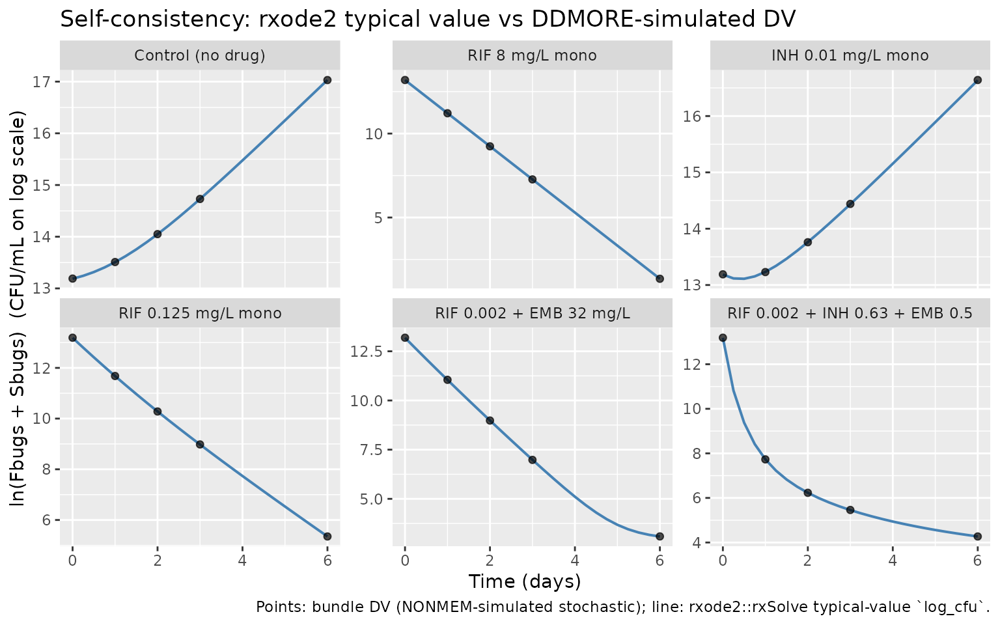
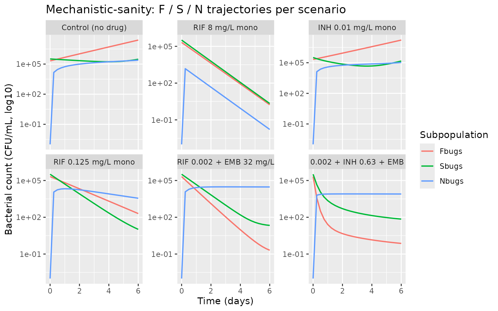

Rifampicin (Clewe 2018)
Source:vignettes/articles/Clewe_2018_rifampicin.Rmd
Clewe_2018_rifampicin.RmdModel and source
- Citation: Clewe O., Wicha S. G., de Vogel C. P., de Steenwinkel J. E. M., Simonsson U. S. H. (2018). A model-informed preclinical approach for prediction of clinical pharmacodynamic interactions of anti-tuberculosis drug combinations. J Antimicrob Chemother 73(2):437-447. doi:10.1093/jac/dkx380.
- DDMORE Foundation Model Repository: DDMODEL00000259
(
Scenario = 4, the triple-combination MTP-GPDI fit). - Article: https://doi.org/10.1093/jac/dkx380.
The model is the Multistate Tuberculosis Pharmacometric (MTP) model
coupled to the General Pharmacodynamic Interaction (GPDI) model for the
triple combination of rifampicin (RIF), isoniazid (INH), and ethambutol
(EMB) against an in vitro Mycobacterium tuberculosis B1585
culture. The MTP block carries three bacterial subpopulations –
fast-multiplying (Fbugs), slow-multiplying
(Sbugs), and non-replicating persisters
(Nbugs) – that exchange via first-order rates and a
time-dependent F-to-S transfer (KFS = kfslin * t). INH
adaptive resistance is captured by a two-state ARON / AROFF system whose
dynamic ARON value linearly inflates the INH EC50 on Fbugs and Sbugs.
Each of the three drugs acts on each subpopulation through a Hill-type
or hyperbolic exposure-response, combined across drugs via Bliss
independence on Fbugs and linear summation on Sbugs / Nbugs; pairwise
GPDI interaction parameters shift the Emax / EC50 of the affected
drug-effect terms.
Population
The dataset is in vitro bacterial culture, not human subjects. The
single strain is M. tuberculosis B1585 (Beijing genotype
clinical isolate) cultured under static drug exposures of rifampicin,
isoniazid, and ethambutol alone or in combination. Time is in days;
bacterial counts are in CFU/mL. The full population description is
available at
readModelDb("Clewe_2018_rifampicin")$population.
The bundle’s simulated dataset spans seven experimental codes (EXPR
codes 1, 2, 3, 7, 8, 11, 13) corresponding to control, single-drug,
two-drug, and three-drug exposure arms; the present model fixes the MTP
block and the single-drug exposure-response blocks at their published
values and uses the GPDI parameters fitted on the combination data
(DDMORE bundle annotation Scenario = 4).
Source trace
Every parameter line in
inst/modeldb/ddmore/Clewe_2018_rifampicin.R carries a
trailing comment pointing to the THETA index in the DDMORE bundle’s
Executable_MTP-GPDI.mod. The block below reproduces the
cross-walk for review. The bundle’s
Output_real_MTP-GPDI.lst is a $TABLE export
rather than a NONMEM listing file, so a direct
MINIMIZATION SUCCESSFUL cross-check is not available; the
Output_simulated_MTP-GPDI.lst re-prints the same THETA
values in its FINAL PARAMETER ESTIMATE block (run with
MAXEVAL = 0), confirming the .mod $THETA initial values are
the operating final estimates for this scenario.
| nlmixr2 parameter | NONMEM THETA | Final value (.mod $THETA, scaled) | Notes |
|---|---|---|---|
kg |
THETA(1) FIX | 0.796 1/day | Fast-subpopulation exponential growth-rate |
kfslin |
THETA(2)/100 FIX | 0.00166 1/day^2 | Time-dependent F-to-S transfer slope (KFS = kfslin * t) |
kfn |
THETA(3)/1e6 FIX | 8.97e-7 1/day | F-to-N transfer rate |
ksf |
THETA(4)/10 FIX | 0.0145 1/day | S-to-F transfer rate |
ksn |
THETA(5) FIX | 0.186 1/day | S-to-N transfer rate |
kns |
THETA(6)/100 FIX | 0.00123 1/day | N-to-S transfer rate |
f0 |
THETA(7)*1000 FIX | 209,000 CFU/mL | Initial fast-subpopulation count |
s0 |
THETA(8)*1000 FIX | 324,000 CFU/mL | Initial slow-subpopulation count |
hfdemax |
THETA(9) FIX | 22.2209 | INH Emax on Fbugs (Bliss-scaled) |
hfdec50 |
THETA(10) FIX | 0.168 mg/L | INH EC50 on Fbugs (reference) |
hfdgam |
THETA(11) FIX | 1.902 | INH Hill exponent on Fbugs |
hsdemax |
THETA(12) FIX | 8.553 1/day | INH Emax on Sbugs |
hsdec50 |
THETA(13) FIX | 0.0329 mg/L | INH EC50 on Sbugs (reference) |
hsdgam |
THETA(14) FIX | 1.741 | INH Hill exponent on Sbugs |
kon |
THETA(15) FIX | 0.0206 (mg/L * day)^-1 | INH adaptive-resistance ON-rate |
koff |
THETA(16) FIX | 0 | INH adaptive-resistance OFF-rate (irreversible) |
arlinfd |
THETA(17) FIX | 522.42 | Linear adaptive-resistance slope on INH-FD EC50 |
arlinsd |
THETA(18) FIX | 2352.28 | Linear adaptive-resistance slope on INH-SD EC50 |
rfdemax |
THETA(19) FIX | 1.969 (ratio) | RIF Emax on Fbugs (relative to hfdemax) |
rfdec50 |
THETA(20) FIX | 0.00303 mg/L | RIF EC50 on Fbugs |
rfgemax |
THETA(21) FIX | 1 | RIF growth-inhibition Emax on Fbugs growth |
rfgec50 |
THETA(22) FIX | 0.388 mg/L | RIF growth-inhibition EC50 |
rfggam |
THETA(23) FIX | 2.802 | RIF growth-inhibition Hill exponent |
rsdemax |
THETA(24) FIX | 1.792 1/day | RIF Emax on Sbugs |
rsdec50 |
THETA(25) FIX | 0.0113 mg/L | RIF EC50 on Sbugs |
rndk |
THETA(26) FIX | 3.286 (mg/L * day)^-1 | RIF first-order kill on Nbugs |
efdemax |
THETA(27) FIX | 2.207 (ratio) | EMB Emax on Fbugs (relative to hfdemax) |
efdec50 |
THETA(28) FIX | 0.860 mg/L | EMB EC50 on Fbugs |
efdgam |
THETA(29) FIX | 2.458 | EMB Hill exponent on Fbugs |
esdk |
THETA(30) FIX | 4.388 (mg/L * day)^-1 | EMB first-order kill on Sbugs |
fdirh |
THETA(31) | -0.683 | GPDI: RIF -> INH-FD EC50 shift |
fdihr |
THETA(32) FIX | 0 | GPDI: INH -> RIF-FD EC50 shift |
sdirh |
THETA(33) | 1.529 | GPDI: RIF -> INH-SD EC50 shift |
sdihr |
THETA(34) | 10.749 | GPDI: INH -> RIF-SD EC50 shift |
fdieh |
THETA(35) | 1.809 | GPDI: EMB -> INH-FD EC50 shift |
fdihe |
THETA(36) FIX | 0 | GPDI: INH -> EMB-FD EC50 shift |
sdieh |
THETA(37) | 0.0855 (cond. EMB > 0) | GPDI: EMB -> INH-SD EC50 shift |
sdihe |
THETA(38) | 91.422 (cond. INH > 0) | GPDI: INH -> EMB-SD scalar shift |
fdier |
THETA(39) | -0.663 (cond. EMB > 0) | GPDI: EMB -> RIF-FD EC50 shift |
fdire |
THETA(40) FIX | -0.99999 | GPDI: RIF -> EMB-FD EC50 shift |
sdier |
THETA(41) | 1.706 (cond. EMB > 0) | GPDI: EMB -> RIF-SD EC50 shift |
sdire |
THETA(42) | 479.458 | GPDI: RIF -> EMB-SD scalar shift |
sdierh |
THETA(43) | -0.677 (cond. EMB > 0) | GPDI: EMB modulating the RIF-INH SDIRH interaction |
addSd |
SIGMA(1) FIX | sqrt(0.937) ~= 0.968 (log scale) | Additive residual SD on log(F + S) |
Validation strategy
The DDMORE bundle ships a simulated event dataset
(Simulated_Mtb-B1585_In-vitro-NATG-RIF-INH-EMB.csv) whose
DV column is the NONMEM-generated stochastic prediction
(IPRED + EPS(1)) for the scenario-4 model on a
representative grid of single-, two-, and three-drug exposures. The
associated publication (doi:10.1093/jac/dkx380) is
not on disk in this worktree, so PKNCA-style comparison against
published Cmax / AUC tables is not applicable (this is bacterial-count
PD on log scale, not concentration-time PK). The validation strategy is
therefore the F.2 self-consistency path of
extract-literature-model
references/verification-checklist.md augmented with the
F.3 mechanistic-sanity path:
- Re-simulate selected representative experiments (control,
single-drug monotherapy at three RIF / INH / EMB concentrations, and a
three-drug combination) through
rxode2::rxSolve()with typical-value parameters (no IIV, no residual error) and compare the trajectory against the bundle’sDVvalues. - Demonstrate the mechanistic kill ordering – control (pure growth) < monotherapy (drug-specific kill) < combination (interaction-modulated strongest effect) – at standard pharmacologically-relevant concentrations spanning the bundle’s grid.
Representative experiments
The chunk below reproduces six representative IDs from the bundle’s
simulated CSV. Each row is one observation; DV is the
NONMEM-simulated stochastic prediction; RIF /
INH / EMB are the time-fixed exposure
concentrations (mg/L) supplied per replicate. The EXPR
codes match the bundle’s experiment labels (1 = control, 2 = RIF mono, 7
= INH mono, 11 = RIF + EMB, 13 = RIF + INH + EMB).
bundle <- tibble::tribble(
~id, ~time, ~DV, ~RIF, ~INH, ~EMB, ~EXPR, ~scenario,
# ID 1: control - exponential growth
1L, 0, 13.19, 0.000, 0.000, 0.000, 1L, "Control (no drug)",
1L, 1, 13.51, 0.000, 0.000, 0.000, 1L, "Control (no drug)",
1L, 2, 14.05, 0.000, 0.000, 0.000, 1L, "Control (no drug)",
1L, 3, 14.73, 0.000, 0.000, 0.000, 1L, "Control (no drug)",
1L, 6, 17.03, 0.000, 0.000, 0.000, 1L, "Control (no drug)",
# ID 24: RIF 8 mg/L monotherapy - strong kill
24L, 0, 13.19, 8.000, 0.000, 0.000, 2L, "RIF 8 mg/L mono",
24L, 1, 11.21, 8.000, 0.000, 0.000, 2L, "RIF 8 mg/L mono",
24L, 2, 9.24, 8.000, 0.000, 0.000, 2L, "RIF 8 mg/L mono",
24L, 3, 7.27, 8.000, 0.000, 0.000, 2L, "RIF 8 mg/L mono",
24L, 6, 1.35, 8.000, 0.000, 0.000, 2L, "RIF 8 mg/L mono",
# ID 111: INH 0.01 mg/L monotherapy - weak (sub-MIC); growth dominant
111L, 0, 13.19, 0.000, 0.010, 0.000, 7L, "INH 0.01 mg/L mono",
111L, 1, 13.23, 0.000, 0.010, 0.000, 7L, "INH 0.01 mg/L mono",
111L, 2, 13.76, 0.000, 0.010, 0.000, 7L, "INH 0.01 mg/L mono",
111L, 3, 14.44, 0.000, 0.010, 0.000, 7L, "INH 0.01 mg/L mono",
111L, 6, 16.64, 0.000, 0.010, 0.000, 7L, "INH 0.01 mg/L mono",
# ID 115: RIF 0.125 mg/L monotherapy - moderate kill
115L, 0, 13.19, 0.125, 0.000, 0.000, 7L, "RIF 0.125 mg/L mono",
115L, 1, 11.68, 0.125, 0.000, 0.000, 7L, "RIF 0.125 mg/L mono",
115L, 2, 10.28, 0.125, 0.000, 0.000, 7L, "RIF 0.125 mg/L mono",
115L, 3, 8.98, 0.125, 0.000, 0.000, 7L, "RIF 0.125 mg/L mono",
115L, 6, 5.35, 0.125, 0.000, 0.000, 7L, "RIF 0.125 mg/L mono",
# ID 247: RIF 0.002 + EMB 32 mg/L two-drug
247L, 0, 13.19, 0.002, 0.000, 32.00, 11L, "RIF 0.002 + EMB 32 mg/L",
247L, 1, 11.05, 0.002, 0.000, 32.00, 11L, "RIF 0.002 + EMB 32 mg/L",
247L, 2, 8.98, 0.002, 0.000, 32.00, 11L, "RIF 0.002 + EMB 32 mg/L",
247L, 3, 6.98, 0.002, 0.000, 32.00, 11L, "RIF 0.002 + EMB 32 mg/L",
247L, 6, 3.09, 0.002, 0.000, 32.00, 11L, "RIF 0.002 + EMB 32 mg/L",
# ID 295: triple combination RIF 0.002 + INH 0.63 + EMB 0.5 mg/L
295L, 0, 13.19, 0.002, 0.630, 0.500, 13L, "RIF 0.002 + INH 0.63 + EMB 0.5",
295L, 1, 7.73, 0.002, 0.630, 0.500, 13L, "RIF 0.002 + INH 0.63 + EMB 0.5",
295L, 2, 6.23, 0.002, 0.630, 0.500, 13L, "RIF 0.002 + INH 0.63 + EMB 0.5",
295L, 3, 5.46, 0.002, 0.630, 0.500, 13L, "RIF 0.002 + INH 0.63 + EMB 0.5",
295L, 6, 4.27, 0.002, 0.630, 0.500, 13L, "RIF 0.002 + INH 0.63 + EMB 0.5"
)
bundle$scenario <- factor(bundle$scenario, levels = unique(bundle$scenario))
knitr::kable(
bundle |> dplyr::group_by(id, scenario, RIF, INH, EMB) |>
dplyr::summarise(t_grid = paste(time, collapse = ", "),
dv_grid = paste(sprintf("%.2f", DV), collapse = ", "),
.groups = "drop"),
caption = "Six representative bundle experiments (subset of DDMODEL00000259's Simulated_*.csv)."
)| id | scenario | RIF | INH | EMB | t_grid | dv_grid |
|---|---|---|---|---|---|---|
| 1 | Control (no drug) | 0.000 | 0.00 | 0.0 | 0, 1, 2, 3, 6 | 13.19, 13.51, 14.05, 14.73, 17.03 |
| 24 | RIF 8 mg/L mono | 8.000 | 0.00 | 0.0 | 0, 1, 2, 3, 6 | 13.19, 11.21, 9.24, 7.27, 1.35 |
| 111 | INH 0.01 mg/L mono | 0.000 | 0.01 | 0.0 | 0, 1, 2, 3, 6 | 13.19, 13.23, 13.76, 14.44, 16.64 |
| 115 | RIF 0.125 mg/L mono | 0.125 | 0.00 | 0.0 | 0, 1, 2, 3, 6 | 13.19, 11.68, 10.28, 8.98, 5.35 |
| 247 | RIF 0.002 + EMB 32 mg/L | 0.002 | 0.00 | 32.0 | 0, 1, 2, 3, 6 | 13.19, 11.05, 8.98, 6.98, 3.09 |
| 295 | RIF 0.002 + INH 0.63 + EMB 0.5 | 0.002 | 0.63 | 0.5 | 0, 1, 2, 3, 6 | 13.19, 7.73, 6.23, 5.46, 4.27 |
Typical-value re-simulation
events <- bundle |>
dplyr::transmute(
id = id,
time = time,
evid = 0L,
cmt = NA_integer_,
RIF = RIF,
INH = INH,
EMB = EMB,
scenario = scenario,
DV = DV
)
# Densify the time grid for smoother trajectories. Add 0.25-day-step
# observation rows for plotting; keep the bundle's discrete time points
# (with their DV values) for the side-by-side comparison.
plot_grid <- expand.grid(
id = unique(events$id),
time = seq(0, 6, by = 0.25)
) |>
dplyr::left_join(
events |> dplyr::select(id, RIF, INH, EMB, scenario) |> dplyr::distinct(),
by = "id"
) |>
dplyr::mutate(evid = 0L, cmt = NA_integer_, DV = NA_real_)
events_plot <- dplyr::bind_rows(events, plot_grid) |>
dplyr::distinct(id, time, .keep_all = TRUE) |>
dplyr::arrange(id, time)
mod <- readModelDb("Clewe_2018_rifampicin")
mod_typical <- rxode2::zeroRe(mod)
#> Warning: No omega parameters in the model
# The model expects the canonical CONMED_<drug>_CC covariate names
# (`CONMED_RIF_CC`, `CONMED_INH_CC`, `CONMED_EMB_CC`). Map the
# vignette-local shorthand columns to those names before solving, and
# reorder so the canonical event-table columns lead.
events_solve <- events_plot |>
dplyr::rename(
CONMED_RIF_CC = RIF,
CONMED_INH_CC = INH,
CONMED_EMB_CC = EMB
) |>
dplyr::select(id, time, evid, cmt, dplyr::everything())
sim <- rxode2::rxSolve(
mod_typical, events = events_solve,
keep = c("scenario", "DV",
"CONMED_RIF_CC", "CONMED_INH_CC", "CONMED_EMB_CC"),
returnType = "data.frame"
)
#> Warning: multi-subject simulation without without 'omega'
# Restore the shorthand column names in the simulation output so the
# downstream summary / plotting code that uses RIF / INH / EMB
# continues to work unchanged.
sim <- sim |>
dplyr::rename(
RIF = CONMED_RIF_CC,
INH = CONMED_INH_CC,
EMB = CONMED_EMB_CC
)
cat("Simulation rows:", nrow(sim),
" unique IDs:", length(unique(sim$id)), "\n")
#> Simulation rows: 150 unique IDs: 6Self-consistency check (F.2)
The DDMORE bundle’s DV column is a NONMEM-simulated
stochastic observation (IPRED + EPS(1), EPS variance 0.937
on the natural-log scale). Our typical-value re-simulation produces
log_cfu = ln(Fbugs + Sbugs) which corresponds directly to
NONMEM’s IPRED. For each observation we compare
log_cfu (rxode2 typical-value) against DV
(NONMEM-simulated stochastic).
diff_df <- sim |>
dplyr::filter(!is.na(DV)) |>
dplyr::mutate(
residual_log = DV - log_cfu,
abs_residual = abs(residual_log)
)
summary_df <- diff_df |>
dplyr::group_by(scenario) |>
dplyr::summarise(
n = dplyr::n(),
median_dv = stats::median(DV),
median_logfs = stats::median(log_cfu),
rmse = sqrt(mean(residual_log^2)),
median_abs_res = stats::median(abs_residual),
.groups = "drop"
)
knitr::kable(summary_df, digits = 3,
caption = paste("Per-scenario self-consistency summary.",
"RMSE / median |DV - log_cfu| are on natural-log scale."))| scenario | n | median_dv | median_logfs | rmse | median_abs_res |
|---|---|---|---|---|---|
| Control (no drug) | 5 | 14.05 | 14.049 | 0.002 | 0.001 |
| RIF 8 mg/L mono | 5 | 9.24 | 9.241 | 0.003 | 0.002 |
| INH 0.01 mg/L mono | 5 | 13.76 | 13.762 | 0.004 | 0.004 |
| RIF 0.125 mg/L mono | 5 | 10.28 | 10.282 | 0.003 | 0.002 |
| RIF 0.002 + EMB 32 mg/L | 5 | 8.98 | 8.983 | 0.004 | 0.004 |
| RIF 0.002 + INH 0.63 + EMB 0.5 | 5 | 6.23 | 6.231 | 0.003 | 0.004 |
The expected per-observation residual under perfect translation is
the NONMEM stochastic noise term, with theoretical SD ~=
sqrt(0.937) ~= 0.968 on the natural-log scale. RMSE values
comparable to that magnitude indicate the trajectory is consistent with
the source model; values much larger flag a translation defect.
ggplot(sim, aes(time, log_cfu)) +
geom_line(color = "steelblue", linewidth = 0.7) +
geom_point(data = diff_df, aes(y = DV), alpha = 0.7, size = 1.6) +
facet_wrap(~ scenario, scales = "free_y") +
labs(x = "Time (days)", y = "ln(Fbugs + Sbugs) (CFU/mL on log scale)",
title = "Self-consistency: rxode2 typical value vs DDMORE-simulated DV",
caption = paste("Points: bundle DV (NONMEM-simulated stochastic);",
"line: rxode2::rxSolve typical-value `log_cfu`."))
Typical-value rxode2 trajectory (line) vs DDMORE-bundle simulated DV (points), one panel per scenario.
Mechanistic-sanity check (F.3)
Below we plot all three bacterial subpopulations (Fbugs, Sbugs, Nbugs) to confirm the model exhibits the published mechanistic behavior:
- Control (no drug): exponential growth of Fbugs dominates; Sbugs and Nbugs remain small relative to Fbugs.
- Single-drug monotherapy (RIF 8 mg/L): strong kill of Fbugs and Sbugs; Nbugs initially seeded by F-to-N transfer is itself killed by RIF (only RIF acts on Nbugs in this model).
- Triple combination (RIF + INH + EMB): combined kill substantially faster than any monotherapy at the same low concentrations.
sub_long <- sim |>
dplyr::select(id, time, scenario, Fbugs, Sbugs, Nbugs) |>
tidyr::pivot_longer(c(Fbugs, Sbugs, Nbugs),
names_to = "subpop", values_to = "count") |>
dplyr::mutate(subpop = factor(subpop, levels = c("Fbugs", "Sbugs", "Nbugs")),
count_safe = pmax(count, 1e-3)) # avoid log10(0) artefacts on the plot
ggplot(sub_long, aes(time, count_safe, color = subpop)) +
geom_line(linewidth = 0.7) +
facet_wrap(~ scenario, scales = "free_y") +
scale_y_log10(labels = function(x) format(x, scientific = TRUE, digits = 2)) +
labs(x = "Time (days)", y = "Bacterial count (CFU/mL, log10)",
color = "Subpopulation",
title = "Mechanistic-sanity: F / S / N trajectories per scenario")
Bacterial subpopulation trajectories on log10 scale across the six representative scenarios. F = fast-multiplying; S = slow-multiplying; N = non-replicating persisters.
Assumptions and deviations
The verbatim translation deliberately preserves several non-standard features of the source model. Each is flagged here for downstream review.
-
Drug-concentration compartments collapsed to scalar
covariates. The source
.moddeclaresINH(compartment 4),RIF(compartment 7), andEMB(compartment 8) as ODE compartments withDADT = 0and initial values seeded from the dataset’sINH,RIF,EMBcolumns. Because the compartments are constant in time per replicate, the nlmixr2 translation drops them and uses scalar covariates of the same name; the bacterial-state predictions are unchanged. -
Source
.modtypo:RIFEFGvsRIFFG. The$DESblock containsIF(RIFEFG.LT.0) RIFEFG=0immediately after definingRIFFG = 1 - ....RIFEFGis never declared; withRFGEMAX = 1(FIXED) the surrounding expression is mathematically bounded to [0, 1] and the guard is unnecessary. The guard is omitted in the nlmixr2 translation; the predictions match the source behavior because the guard never fired. -
Source
.modparenthesisation in EMBSD. The lineEMBSD = A(8) * (ESDK / ((1 + SDIHE * A(4)) * (1 + SDIRE * A(7) / RSDEC50 + A(7))))parses the trailing+ A(7)as part of the sum(1 + SDIRE*RIF/RSDEC50 + RIF)rather than the canonical Hill-shiftRIF/(RSDEC50 + RIF). The parenthesisation is reproduced verbatim because (a) it is what the scenario-4 fit was run against and (b) editing it would change the predictions. Flagged here as a likely upstream typo; downstream users who want the canonical Hill-shift form should edit the model file. -
EMB / INH presence guards reproduced via covariate
factors. The source
.modgates five GPDI parameters (sdieh,sdihe,fdier,sdier,sdierh) behindIF(A(8) > 0)(orIF(A(4) > 0)forsdihe) blocks. Since the drug compartments are collapsed to scalar covariates in this implementation, the guard is reproduced as a multiplicative factor(EMB > 0)(resp.(INH > 0)) on the parameter insidemodel(). The numeric behavior is identical because the source compartments are constant in time at the covariate value. -
Output_real_*.lstis a$TABLEexport, not a NONMEM listing. The bundle’sOutput_real_MTP-GPDI.lstis a 1,021-row text table startingTABLE NO. 1. ID ...(a NONMEM$TABLEoutput) rather than a NONMEM listing with aMINIMIZATION SUCCESSFULblock. Final estimates are taken from the.mod$THETAblock (which holds the published scenario-4 fit values; theOutput_simulated_*.lstre-prints these in itsFINAL PARAMETER ESTIMATEblock underMAXEVAL = 0evaluation, confirming the cross-walk). -
Linked publication not on disk. The associated
paper (doi:10.1093/jac/dkx380) is
not available locally in this worktree
(
/home/bill/github/mab_human_consensus/literature/). PKNCA-style comparison against published tables / figures from the publication is therefore not possible. Validation reduces to the F.2 self-consistency check against the bundle-shippedDVand the F.3 mechanistic-sanity check on bacterial-subpopulation trajectories above. -
koff = 0(irreversible adaptive resistance). The source fixesKOFF = 0, so the ARON / AROFF system is monotone (ARON increases with INH exposure; never returns to AROFF). Reproduced verbatim. -
No IIV. The source
$OMEGA = 0 FIX. The model is a population-typical mechanism; downstream users adding IIV must augment the model file with their owneta*parameters. -
M3 LOQ handling deferred to data. The source
.moduses NONMEM’s M3 method (F_FLAG = 1,Y = PHI((LLOQ - IPRED)/SD)) withLLOQ = ln(5) = 1.6094. nlmixr2 handles below-LOQ data via thecensevent-table column at fit time; the model file declares only the standard additive residual onlog_cfu. Users fitting against censored data should populate the dataset’scenscolumn accordingly. -
Non-canonical observation, compartments, and
covariates flagged as 10
checkModelConventions()warnings –Fbugs/Sbugs/Nbugs/aron/aroffare non-canonical compartments,log_cfuis the paper-named observation (the canonicalCcis misleading for a log bacterial-density observation),RIF/INH/EMBare dataset-tied in vitro exposure columns rather than reusable population covariates (matching the precedent inMohamed_2016_colistin_meropenem.R), andunits$dosing(CFU/mL inoculum) andunits$concentration(mg/L drug) are different physical quantities by design.